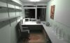
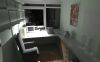

"artefact-metadata-hxa7241-www": {
"title": "About",
"author": "Harrison Ainsworth",
"date": "2017-01-02",
"id": "urn:uuid:EB97B2D0-541B-43D0-9F79-49D4D104DBA4",
"type": "jottings",
"subtype": "text/html",
"wordcount": 210,
"hashsecure": "sha256:893e781943178bdfAbout
a vague, apocryphal, and soi-disant description of the author
What
This site is a collection of things I have produced: including software, articles, book transcriptions, and other bits and pieces.
The name HXA7241 takes its pattern from the film THX-1138:

“How shall the new environment be programmed? It all happened so slowly that most people failed to realise that anything had happened at all.”
Who
Mostly, I have been writing software for various platforms and languages – for many years. (Here is the most ancient code I still have.) I am usually in Northern Europe.
But really: I am less than 0.5% different from anyone else genetically, and just as ordinary experientially – so look around, pick anyone, and you will have a fairly good picture of me.
Contact
- Web
- http://www.hxa.name/
- hxa7241+www (ατ) googlemail (dοτ) com
- http://twitter.com/hxa7241
- GitHub
- http://github.com/hxa7241
- Last.fm
- http://www.last.fm/user/hxa7241
Surroundings
pictures
Not photos – that would be too mundane. Here are some synthetic renderings (made with one of my old renderers) of my study, where this website was made:
|

both luminaires switched on
|

only desklamp switched on
|
{kind=link}
{kind=link}
other
- Bibliography of print-books [txt]
- Reliquary — some ancient obscure Z80 code